毒と笑いととつげき東北
〜〜過去の雑記〜〜 （日記ペース無理なんで雑記に名称変更）
14）03/03/13〜03/07/20分
13）03/01/20〜03/03/12分
12）02/09/30〜03/01/02分
11）02/07/08〜02/09/29分
10）02/01/07〜02/07/08分
９）01/08/30〜01/10/30分
８）01/06/20〜01/08/25分
７）01/05/09〜01/06/12分
６）01/03/02〜01/05/03分
５）01/02/06〜01/03/01分
４）00/12/30〜01/02/05分
３）00/12/22〜00/12/29分
２）00/12/14〜00/12/21分
１）00/11/24〜00/12/13分

04/12/12
できすぎくんの元になったプログラム
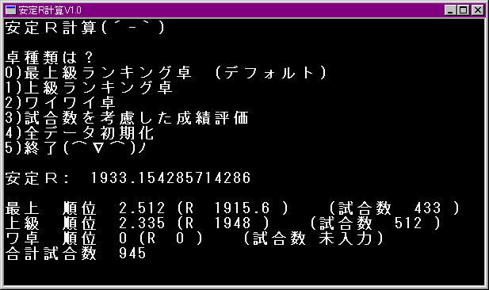
な、なんだこの、いかにも使いにくそうなソフトは・・・。そして安定Ｒの無駄な有効数字桁数は。
このソフトはその後「どへたくん」という名前を経て、「できすぎくん」として、まともなユーザインターフェイスを備えたソフトになった。
よかったなみんな。このままの形で進化して「どへたくん ver9.00」になってなくて！
04/12/11
とつげき東北著『科学する麻雀』講談社現代新書 2004/12/17発売
というわけで、やっと出ます…ハイ。
Amazonでの予約はこちら。
実生活の方がしばらくかなりハードでして、遅れてしまい申し訳ありませんでした。
基本的に全てのデータを1から取り直し、理論を構築して書き下ろしたため、このホームページの内容とはかなり違ったものとなっています。
本ページの内容と違う部分もあるかと思いますが、理論は常に進歩してゆくものですので、「違うじゃん！」といじめないようお願いします(笑)
ただ、違っているところで、これまで本ページの内容で明らかに「間違っていた」部分については、素直に謝ろうと思います(笑)。ごめんなさいでした。
ところで最近、3年間ちょっと付き合ってた彼女と別れました。
理由は各々で想像をたくましくしてください(笑)
浮気したとかされたとか、実はEDだった…などといった面白いネタがあるわけでもないので。
私について色々書いていただくのはかまいませんが、彼女本人のことは、そっとしておいてあげてください。
既に「とつげき東北の彼女」ではなく、普通の娘さんになったのですから。
04/05/16
この表示名のロマンチックさの差をみよ。
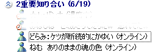
ケツのかゆさを人に知らせるな！
何をおれに望んでるねん（涙）
せっかくねむの表示を見て、ロマンな気分になってるのに、上を見たらこれかよ。
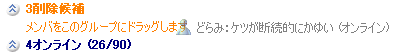
適切な処置をば。
04/03/15
いやこの酒、値段の割にはかなりおいしい部類なのでいいんですが。

お酒のうまみ（コク）はアルコール分に比例します。
なるほど。すなわち、
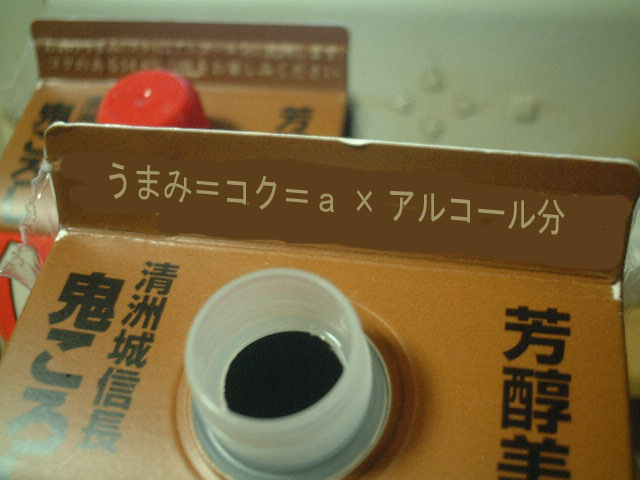
意味不明やがな・・・
コク
――― ＝ アルコール分
ａ
コクをａで割ればアルコール分になるんだな。（ａっていくつやねん！）
ていうかそれやったら、アルコールのみ出しときゃええんちゃうん・・・
88％のウォッカの1/6のおいしさしかないんかよこれ！
04/03/01
ハンゲームのアバター。ファッショナブルすぎ！
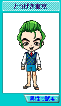
04/02/18
算法言語学講義1「傲慢と謙虚は反対の言葉ではない」
傲慢、謙虚という言葉について考えてみた。
一般に、傲慢、謙虚という言葉はどのような人に対して当てはまるだろうか。
世の中の平均が50点だとしよう。
50点の人が「50点だったわ」といえば、別に傲慢ではない。謙虚でもない。
70点の人が「ん？ 70点だったよ？」と言っても、それだけでは傲慢とは限らない（しばしば傲慢と取られたりもするが、決して謙虚とは見なされない）。
確実に傲慢と思われるのは、70点の人が「70点だった。おれはできるからね」みたいに言う場合である。
30点の人が「おれ50点くらい取れるから」と言っても、「傲慢」ではなく、ただの勘違い、身の程知らずと見なされる。
では30点の人が「30点しかなかったよーおれまだまだだなあ」と言ったらこれは謙虚だろうか？
謙虚というよりは、むしろ普通のダメな人のように感じられる。
70点の人が「まあまあ取れてたけど、自分なんてまだまだ」といえば謙虚だろう。
50点の人が「私などまだまだ」と言った場合も、謙虚といえよう。
以上からわかることは、傲慢とは、実際にある程度以上に得点が高くて、かつ、それをもとに自分の高さを誇る場合に当てはまる言葉であるということだ。
また謙虚とは、実際には高いが、または実際には普通だが、実際以上に低く申告するような場合に言われがちである。
50程度の人が「おれ本気出せば60くらいあるから」と言うのは、傲慢というよりはただの「勘違い」として処理される。
これを事実関連とまとめてみよう。50を世の中の平均とする。
|
実力 |
自称 |
下位を馬鹿にするかどうか |
下される評価 |
| × |
30 |
20 |
× |
身の程を知っている |
| Ａ |
30 |
30 |
× |
普通のできない人、身の程をわきまえた人 |
| Ｂ |
30 |
40 |
○ |
身の程知らず |
| Ｃ |
50 |
50 |
× |
普通 |
| Ｄ |
50 |
40 |
× |
謙虚 |
| Ｅ |
50 |
50 |
○ |
勘違い |
| Ｆ |
50 |
60 |
× |
自信過剰な凡庸 |
| Ｇ |
50 |
60 |
○ |
勘違い、調子に乗っている |
| Ｈ |
70 |
50 |
× |
すごく謙虚 |
| Ｉ |
70 |
60 |
○ |
傲慢 |
| Ｊ |
70 |
70 |
× |
普通、尊敬できる、時には傲慢 |
| Ｋ |
70 |
70 |
○ |
傲慢 |
| Ｌ |
70 |
80 |
× |
自信過剰なできる人 |
| Ｍ |
70 |
80 |
○ |
勘違いかつ傲慢 |
「傲慢か謙虚か」は、直接実力とは無関係だし、実際に実力があるかどうかともあまり関係しない。
ただし、「傲慢」が成立するためには、一定の実力がなければならないことはわかる。
「実力があり、かつ、それを鼻にかけて下位を馬鹿にする」場合に、「傲慢」と呼ばれることが理解できる。
では、その正反対の「実力がなく、そのことを鼻にもかけずに上位を尊敬する人」は「謙虚」だろうか？ 一般には、その段階では謙虚とはみなされないだろう。
せいぜい「身の程をわきまえた人」である。
実際にある程度の実力があるが、それを一切出さないことが「謙虚」とみなされるのである。
つまり、「傲慢」も「謙虚」も、「平均以上の実力がある人」にしか向けられない言葉である。
もっと言えば、実力があるが、平均たる自分たち（50）に近づいてきたり、それ以下に降りてくる人は、「謙虚」と言ってほめ、逆に自分たちを見下す人々を「傲慢」とカテゴリ分けして道徳的に叩くという構造がある。
これは明らかに、「実力」という価値基準を道徳の価値基準にスリカエる技であり、また50程度の人間が好んで使う手である。
その証拠に、50程度の人にとって目にも入らない30程度の人が何をしようと、「謙虚」とも「傲慢」とも言わず、別の差別用語で一蹴できる。
この道徳に従えば、できる人はできるという「事実」を隠してまで、なるべくできないように見せなければならない。
周りを馬鹿にしているつもりがなくても、「70あるよ」と言うだけで「調子に乗って」「えらそうに」と言われることはままあるからだ。
逆に、できない人は何をやっても「普通の人」に見下される。
もっとも多い普通の人は、普通にしているだけで良いし、少しへりくだればとたんに「謙虚」になることができる。
「謙虚」は決して「傲慢」の反対ではない。
傲慢かつできない人はいないが、謙虚だが凡庸な人はいる。
つまり「傲慢」とののしられるためには、平均より高い能力がいるが、ごく平凡な能力を持った50の人間でも「謙虚」と言われ褒められることができる。
平均人にとって実に甘い評価法である。上を落とし、自分たちを大した努力もなく持ち上げられるのだから。
しかも場合によっては、「実力よりも人間性」という言葉によって、平均人が有能な人物を「逆転」することもできる。
（道徳は常に凡庸な人間向けにできている）
なお、このネタのきっかけになったのは「周りを馬鹿にする人にできる人はいない」というある発言だった。
表を見ればわかるとおり、傲慢な人ほど、実際には「できる人」の比率が高い傾向があることが明らかである（中には勘違いも多いが）。
また、周りを馬鹿にするかどうかと、実力は直接関係しない（もしも皆が正しい認識を持ち、率直な感想を言うのだとすれば、馬鹿にする人ほど実力がある）。
できる人は正しい「認識」を隠さなければ「ダメ」と言われがちなのに、凡庸な人は特に何もしなくて良い。
誰が好き好んで「謙虚さが大事」と言いまくるか、これで見当がつくだろう。
私は謙虚な人間などになりたくなく、むしろ傲慢な人間を目指したい。
04/02/16
儲かるアルゴリズム
みずか「契約書がない金銭貸借契約って難しいわねぇ。」
みずか「知り合いがさぁ、120万、借用書無しで貸しちゃったら、逃げられたんだってー」
みずか「馬鹿なのか可愛そうなのか。。」
とつげき東北「おれも借りてぇ←」
とつげき東北「しかも逃げたい」
みずか「借用書かけよｗ」
とつげき東北「絶対に書きませんよ」
とつげき東北「
プログラム的に言えば
if（貸す）借用書を書かせる
if(借りる)借用書を書かない；goto
どこか遠いところ
」
みずか「貸す時には借用書を書かせて、借りる時には借用書を書かないのね。でもたかだか100万ちょっと持って、どこまで逃げるのよ。」
とつげき東北「わかってないねぇ」
とつげき東北「
for(loop=1 to 500)
{
if（貸す）借用書を書かせる
if(借りる)借用書を書かない；goto
どこか遠いところ
}
」
みずか「500回繰り返すのか・・・」
とつげき東北「これで100万×500で、5億円ゲット」
みずか「借用書無しで100万貸してくれる人500人見つけるのが難しそうだけど。。」
とつげき東北「じゃあ簡単だ」
とつげき東北「
if(かしてくれない)殺す
」
みずか「ただの犯罪者じゃねーかｗ」
とつげき東北「うはは」
04/02/11
「いっぱい」の「い」を「お」に変えると？
小学生のころ。
凸「おとうさん、”いっぱい”の”い”を”お”に変えると？」
父「・・・・・・ん？ いっぱお？」
真顔かよ！ アンタ頭悪いよ・・・
04/02/10
麻雀本進捗状況
原稿は現在鋭意執筆中で、発売日は未定です。タイトルも値段も未定です。
「いつでるの？」「もうでたの？」「タイトルは？」「歌手のSHAZNAってどこに行ったの？」などの質問はご遠慮ください。
「原稿進んでる？」など胃が痛くなる発言は厳禁です。
むしろ「原」という漢字の時点でダメです。
ちゃんと書いてるから安心してくださいませ＞編集者様
04/02/08
オンリーワン
世界に一つだけの花？
そんな美化しなくても、誰もが世界に一つだけの鼻もってるやろが！
まさか量産型鼻なのか？
04/01/18
併願者は合格率が高い？ ※この記事に、特定大学や、その宣伝内容を批判する意図はありません
私立大学の願書のよくある記述のひとつに、「併願すると合格率が上がる」というのがある。
例えば次のようなものだ（以下は同志社大学のページより引用）。
「
Ｑ： 一般入試で、複数の学部を併願すれば合格率が高くなると聞きましたが、ほんとうでしょうか？
Ａ：2003年度入試の合格率を見ると、１学部のみ受験した場合は35.0％、２学部併願では45.8％、３学部併願では54.0％で、併願すると合格率は高くなっています。
これは、本学の入試問題は全学的に組織された委員会が全学部の問題を作成しているため、学部の出題形式にちがいがないため受験対策を立てやすいことが考えられます。
また、入試環境に慣れることも理由の１つでしょう。
」
たくさんの学部を受ければ、どれかに合格しやすくなるのは当然である。
クジを2つ買えば、1つ買うよりも「アタリ」が出やすい。それは当たり前だ。
だがここで聞いているのはそういうことではない。
仮にも同志社大学を受験する人が「ほんとうでしょうか？」と聞いているのだ。
まさか、「クジは1つ買うより2つ買った方が当たりやすいと聞きましたが、ほんとうでしょうか？」ではないだろう。
そんな意味で質問する人は受験などあきらめるべきだ（または歩道に乗り上げるべきだ）。
「上がります。複数受験すれば、それだけ合格のチャンスが増えるからです」と答えず、「対策を立てやすいから」「慣れるから」などの理由が挙がっていることからも、それがわかる。
受験したうちの「1学部あたりの合格率」があがる、という意味に捉えられて当然のやりとりである。
ではこれを確かめる。
全ての学部の合格率が等しいとしよう。
1つの学部を受験した時の合格率がＰの人間が、その学部を不合格になる確率は１−Ｐだから、ｎ学部受験したとすると、ｎ学部全て落ちる確率は（１−Ｐ）^nである。
つまり受験した全ての学部のうち、少なくとも1学部に合格できる確率は、１−（１−Ｐ）^n と表せる。
１学部のみ受験した人の合格率は35％だが、これに対して併願者はどうだろう。
２学部併願での合格率が45.8％の人の、1学部あたりの合格率は、１−（１−Ｐ）＾２＝0.458となるようなＰを求めると、Ｐ＝0.264。
また３学部の場合、１−（１−Ｐ）^3＝0.540となるＰは、0.228となる。これをまとめると、次の表のようになる。
| 受験学部数 |
どこかの学部への合格率 |
1学部あたり合格率 |
| １ |
35.0％ |
35.0％ |
| ２ |
45.8％ |
26.4％ |
| ３ |
54.0％ |
22.8％ |
じょじょに低なっていっとるがな！
この調子でいくと、100学部受けたらたぶん全滅やよ！
もし1学部あたりの合格率が35.0％の人が2学部受ければ、58％の確率で受かるし、3学部受ければ73％の確率で受かるのが普通なのだ。
ところが実際はそれより少なくなってしまっている。併願する人ほど、そもそも受かりにくいということがわかる（実力ある人は1学部だけでいいからね）。
それを、さも併願した方が本来以上に得であるかのように書くな(笑) 明らかに質問をわざとあり得ない解釈して誘導しとるやろ(笑)
正しいことを書いたＱ＆Ａを作ろうじゃないか。
Ｑ： 一般入試で、複数の学部を併願すれば合格率が高くなると聞きましたが、ほんとうでしょうか？
Ａ：吉野家は美味しいです。また、スーパーマリオの主人公はキノコを取ると大きくなります。
正しい！ 嘘かいてない！！
いや、まじめにやろう。
Ｑ： 一般入試で、複数の学部を併願すれば合格率が高くなると聞きましたが、ほんとうでしょうか？
Ａ：2003年度入試の1学部あたり合格率を見ると、１学部のみ受験した場合は35.0％、2学部併願では26.4％、3学部併願では22.8％で、併願すればするほど、1学部あたり合格率が低くなっています。
本学の入試問題は全学的に組織された委員会が全学部の問題を作成しているため、学部の出題形式にちがいがないため受験対策を立てやすいことや、入試環境に慣れることによって、合格率が上がると仮定すると、併願受験生はますますダメということになります。
「出題傾向への対応」や「慣れ」に頼っている時点で、明らかに頭悪そうですよね。成績いい人はそんな面倒なことしませんし、しなくても合格しますよね。
これで受験生倍増だネ♪
03/11/05
レッキングクルー最難関ステージ
レッキングクルー自作エディット難関ステージ。クリアした人はご報告を。
STAGE2が最難関です。世界で一番難しいレッキングクルーのステージと断言します(笑)
念のために言っておきますが、全てクリアできます(笑)。
STAGE1：ゴールデン不可
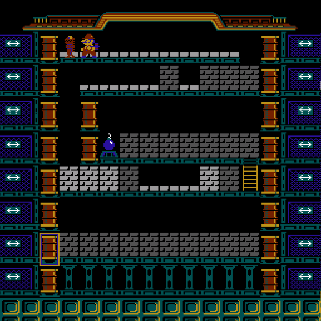
STAGE2：ゴールデン不可
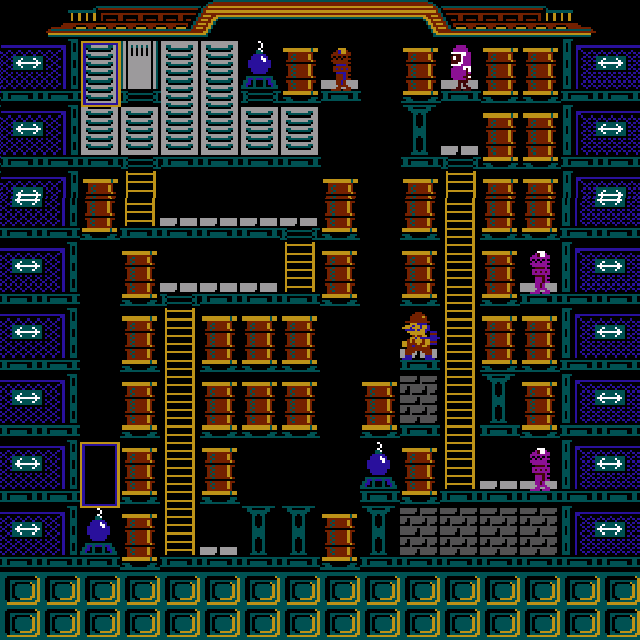
STAGE3：ゴールデン必須（左の爆弾で出せます）
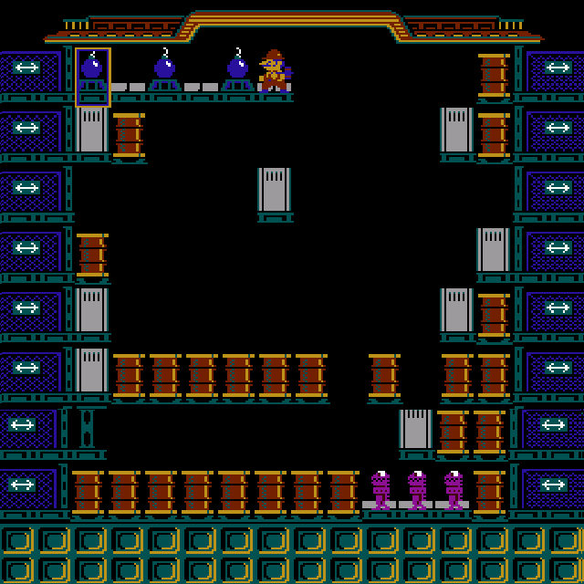
STAGE4：ゴールデン必須
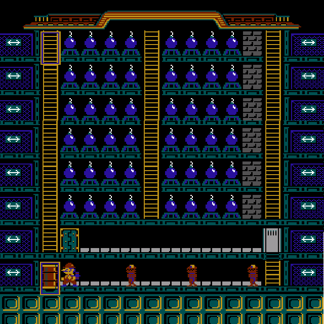
レッキングクルーはパズル的要素が少ないので、アクション的な面が多くなるのが残念やね。
その点サターン版ロードランナーなどはすばらしいね。大学入試数学よりも論理的に難しい面がいっぱい作れる。
昔懸賞金1万円つきで友達にやらせたが、1ヶ月以上かけても誰一人クリアできんかったな・・・
03/09/26
韓国
韓国に行ってきた。
ミョンドンという街に滞在したのだが、驚いたのは、街中に日本語が溢れていることだ。
日本人観光客が多いため、たいていの店に日本語のメニューがあり、注文程度なら日本語が通用する。
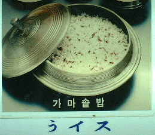
「すみませーん、うイスくださ〜い」
いや、言いたいことはわからんではない。頑張って日本語メニューを用意してくれてるのだから、笑ってはいけない。
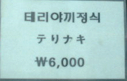
なぜ彼らはひらがなとカタカナを併用したがるのか。そして４文字中２文字も間違うのか。
こうしたメニューを作る人々の会話を想像しながら見ていこう。
Ａ「うちの店も日本語のメニューを出しましょうよ」
Ｂ「それはいい。私は日本に行ったことがあるから、日本語なら任せておけ」
Ａ「おお、さすがＢさんだ。ではさっそく、これをメニューに入れましょうよ」
Ｂ「どれどれ・・・」
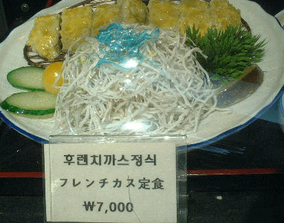
（後日）
Ａ「Ｂさん！ 何かうちのメニューを見て、日本人が笑ってますよ！」
Ｂ「おや、すまん。カスは間違いだった。よし、次からは直すよ」
Ａ「じゃあこれお願いします」
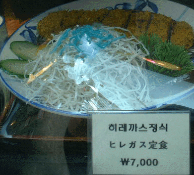
直すべきはその文字ではない。
Ａ「Ｂさん、この新しいメニューは日本語では何と言うのでしょうか？」
Ｂ「任せておけ」
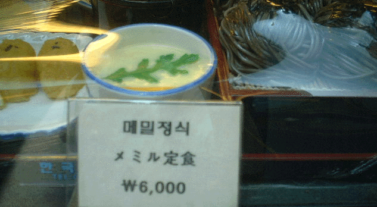
そんな定食は存在しない。
それらは日本においてメミルとは呼ばれない。
Ａ「また新しいメニューができましたよ」
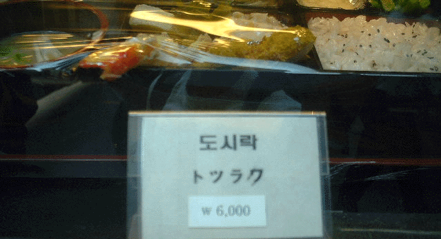
だから！
自分の中だけで「おっとしまった、トツラワじゃない、トツラクだった」などと訂正して満足するな！
Ａ「これは日本では何と言うんですかね？」
Ｂ「トツラワだよ、トツラワ」
Ａ「そうなんですか！ さすがＢさんですねぇ。よし、トツラワ、と」
（後日）
Ｂ「これこれ。ワじゃないよ君ぃ。ク、だよ。ク。」
Ａ「あっすみません！ すぐ訂正します！」
Ｂ「全く、これだからシロウトは」
Ａ「さすがＢさんだなぁ、頼りにしてますよ！」
Ｂ「フフフ」
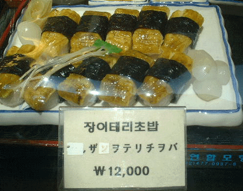
その結果がこのザマである。
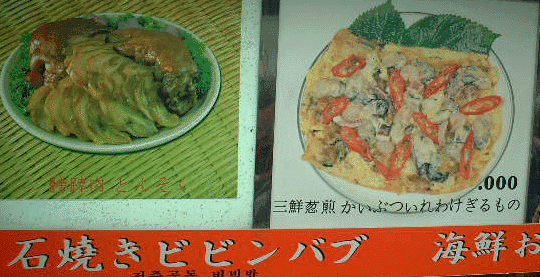
「かいぶついれわけぎるもの」
もはや日本人の想像の範疇をはるかに超越した間違い方である。
街中の日本人観光客の笑いを取りながら走るぶざまなリムジンバスに乗り、我々はミョンドンを後にした。
03/08/30
おれらのオモチャ獣冴くんの話
音声チャットなるものをご存知だろうか。
MSNの機能で、マイクとスピーカーを使ってPC上で「電話」のように声のやりとりができる機能だ。
今の彼女と遠距離恋愛をしていたころは、電話代が馬鹿にならんので、これでよくチャットしていた。
これを、神龍★獣冴にも導入させてみた。
凸「マイク買えって！ 音声チャットってのができるねん。めっちゃ楽しいから！」
獣「なにそれ？」
凸「みんなでワイワイしゃべれるねんで」
獣「おもろそうやん！」
さっそく次の日、獣冴はだまされてマイクを買ってきやがった。
すぐに音声チャットを開始してみたが、獣冴の方の声は聞こえるのだが、こちらの声が届かないようだ。
凸「もしもーし」
獣「あれ？ なんで聞こえんねやろ おーい」
凸「返事しろ おい ボケナス」
獣「聞こえないよー」
凸「（ここは、こっちも聞こえていないフリをしたほうが楽しい）」
というわけで、むこうも聞こえないフリをしてチャットで「聞こえないなぁ」などと入力しながら、獣冴の様子をうかがっていた。
凸チャット「きこえへんで！ はよ設定せいよ。頭わりぃなお前」
獣「なんやねんこれ・・・そんなん言うたかて しょうがないやん・・・」
こいつ・・独り言いっとるよ！！
凸チャット「がんばれや」
獣「ちゃんとしてるのに・・・」
かわいい！ 獣かわいいよお前(笑)
獣：ガサッ・・・ガサッ
うごめいてるよこの人！ なにしてるん〜〜！！
凸チャット「お？ 今ちょっと何か音が聞こえたような気がする・・・ちょっと手たたいてみてよ」
獣：パシッ！！ パシッ！！
言われるがまま！(笑)
凸チャット「いや、やっぱ違うわ。きこえへん。右手あげてみて？」
獣：ガサッ！！
挙げたで！ 挙げたこと確認しようがないし、あらゆる意味でなんの解決にもならんで！
獣チャット「右手挙げても意味ないんちゃうんｗ」
その通りですわ！！！ でもお前は挙げてしもうたがな。
結局、紆余曲折を経て、獣と音声チャットを確立することに成功した。
ひとしきり、何気ない会話を交わした後。
獣「うわ、隣の部屋におるおかん起きたわ」
凸「おかあさーん」
獣「おい！ とつ！ 声でかいって！！」
凸「こないだの触手アニメのエロ画像は〜？」
獣「！！！！」
この瞬間、音声チャットは途絶えた。
なお、「みんなでワイワイしゃべれる」といううたい文句で導入させた音声チャットだったが、実は1vs1でしかしゃべれないことも後に判明した。
獣よ、正直すまんかった！(笑)
03/08/26 （08/25を先に読まれることをオススメします）
喫茶ナガイの話
自分の実力を把握するということは、何事においても重要なことだ。
例えば大学受験がそうである。
おれが予備校の寮にいたころ、永井クンという知り合いがいた。
彼はあまり勉強のできない子で、しかも性格が変なのでけっこう馬鹿にされていた。
彼は「オラ東大いく」（静岡弁らしく、まじでオラという）
と言ってはばからなかった。
彼の偏差値は50前後。東京大学は当時その模試で偏差値69であり、カメと神くらいのレベル差があった。
もちろん、模擬試験の成績などは常に「Ｅ判定」であり、いつも志願者の中で下から5番目などのおいしい位置をキープしていた。
「模試で何度Ｅ判定をとっても、本番でできれば受かる」
が彼の口癖であった。
確かにそれ自体は正しい・・・しかし、その、なんと言ったらいいかわからないが、君の思っていることは、違う。
おれらはいつも永井クンに
「君・・・東大うからねぇよ」
と、一見厳しいようだが、本当の優しさのある感じの言葉をかけていた。つまり単に馬鹿にしていた。
彼は、参考書を手にとってパラパラパラとページをめくることを何度も繰り返す勉強法をしていた。
これは彼が読んだあやしい本に書かれていた「無意識学習法」を実践したものである。
お前今すぐドラゴンボール探しに行け。シェンロンに「東大受からせてください」と頼む。その方がまだ現実的に合格できそうやで。
彼は予備校の寮でもあまり友達がいなかった。
そこで彼は
「今日からうちの部屋、喫茶ナガイだから」
などと言い出した。
「ついに狂ったかお前」「また永井が変なこと言うとるで」「死んだ方が得策では？」「火の犬」
あらゆる罵声を浴びせかけられる永井。しかし彼は屈せず、喫茶ナガイのシステムの説明を始めた。
聞けば、彼の部屋は喫茶店であり、彼の部屋にいくとタダでお菓子やコーヒーを入れてくれるというのだ。まず明らかに、そんなシステムの喫茶店はない。
友達が誰も遊びに来てくれないから、モノでつる。それもお菓子で。なおかつ「喫茶ナガイ」。偏差値53にふさわしき奇抜なアイデアと言えよう。
最初は皆よく喫茶ナガイを訪れたが、3日くらいすると飲み物の選択肢が非常に狭いことに気づき、誰も彼の喫茶を訪れることはなくなった。没落早すぎ(笑)
受験が近づくと、多くの受験生が実力と志望校のギャップに気づき、目標を下げる。
おれの周りに10人はいた「早慶志望」の連中も全員が「やべぇ・・・」と気づいていた（もちろん彼らは全員早慶に落ちた）。
あの自信満々の男、永井でさえ、若干はその気持ちが揺らいで来たようだ。
偏差値は50前後のまま低迷、数学も理科も全くできず足切りが非常に懸念される。
「まあ一橋なら楽勝なんだけど。早慶は滑り止めだしね。でも東大は受けるけどね」
まあお前、ちょっと落ち着け。ちょっとそこでそのまま待ってろ。あの〜誰か包丁とか爆竹持ってきてくださ〜い。
少し時間が飛ぶが、入試が全て終わった後のこと。
おれとバイマンキンが交差点で信号待ちをしていると、永井が得意満面の顔をして交差点の向こうから走ってくるのが見えた。
「とつさん！ バイマンさん！」
彼は赤信号など眼中になし、全速力でこちら側に突撃してきた。
「あのねあのね、オラね、立命館に受かったの！ センターがさオラさ、社会と英語で8割とれてたからさ・・・」
騒ぐでない、凡人よ。
どの模試のどの1科目においてもお前はおれやバイマンに勝てることがない。
「一橋楽勝レベル」がどうして立命館受かって信号無視するほどテンション上がってるねん(笑)
自称「東大行く」人が、案の定東大は足切りになり、早慶どころか明治法政その他もろもろ当然のように落ちたあげく、たまたま2科目できたセンターのセンター入試で立命館の山ほどある入試方式の1つに運良くひっかかって何がうれしいねん(笑)
同じような話は他にもある。
うちの高校に、京都大学を目指して3浪した人がいたらしい。
自分の進路を考え抜いて、京都大学に憧れて3年間頑張ったのである。
彼の進路は最終的に「摂南大学」であった。
彼の進路は最終的に「摂南大学」であった。
03/08/25
ツァラトゥストラはこう言った
おれの好きな哲学者「ニーチェ」。このページでもたびたび名前が出てくる。
主著の一つは『ツァラトゥストラはこう言った』である。しかしおれはツァラトゥストラが好きでない。
ニーチェの魅力はその毒々しい表現のかっこよさと、卓越した人間心理の把握と、冷静な分析とにあるのだが、『ツァラトゥストラ』には、ニーチェの「詩人」的な側面が強くですぎていて、あまり細かい分析が出てこないからである。
では表現のかっこよさという点において、ツァラトゥストラはどうだろうか。
まず各章のタイトルをみてみる。
・世界の背後を説く者
・蒼白の犯罪者
・墓の歌
・大いなる事件
などなど。ふむ、なんかかっこよさげだな！
どれ、内容を見てみよう。パラパラとめくって読んでみる。
「
大地は、――とツァラトゥストラは言った――
」
おお、なんかかっこいいんちゃうん。
「
大地は、――とツァラトゥストラは言った――皮膚を持っている。
」
かっこよくねぇぇ！！！
ヒフてなんやねん！ 仰々しい語りの割にださいよ！
「
そしてこの皮膚はさまざまな病気におかされている。たとえば、その病気の一つが「人間」なのだ。
」
う〜む、深いのか浅いのかわからない文章であるが、まあちょっとかっこよくなった。
今後この調子でどんどんかっこいい表現が出てくるはずだ。進もう。
「
他の病気のひとつに「火の犬」がある。
」
えっ？
「
他の病気のひとつに「火の犬」がある。
」
ちょっとまって！ もう一回チャンスを！
「
他の病気のひとつにがある。
」
「火の犬」言うてもうてるーーーーーΣ(´ﾛ｀；)かっこ悪ぅぅ！！
「
出て来なさい、火の犬よ、おまえの深みから！
」
は、恥ずかしいっす・・・あまりその単語を堂々と言わないでくれます？ ニーチェさん・・・
「
（火の犬にむかって）わたしの言うことを信じなさい、親しき大騒ぎ屋よ！
」
なに屋さんやねんそれ！
こんなかっこよくない表現はじめてぇぇぇ！！
いやまて。何か意味がある。ニーチェの思想が、ここにあるのだ。
「火の犬」とは一体なにか。何を表す比喩なのだろうか？
「
火の犬はこれを聞くと、（中略）恥じ入って尻尾を巻き、低い声で わぅ！ わぅ！とうなると、かれの洞穴にもどってしまった
」
比喩ちゃうんかい。リアルなイヌかよ。
ヒフの病気とか、どういう意味なのだろう？
大地＝ヒフとは、どういうことなのだろう？
どんな思想があるのか？
それらの疑問はなんら解決されないままその章は終わってしまった。
ニーチェさああぁん！ しっかりぃぃい！
頭の中に浮かんだ映像をふりはらいながら、「ニーチェ好き」でい続けるために、おれはツァラトゥストラを閉じたのである。。。
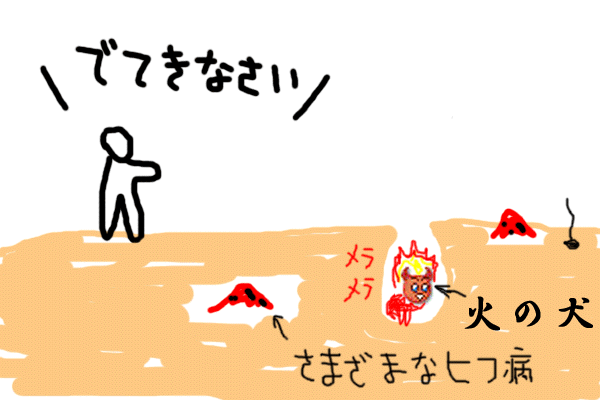
（ちなみに答えだけ言うと、ニーチェは「大地好き」、つまり無類の大地フェチなのである。だからなんとなく大地と言ってみたかった。また彼は医学や生理学好きでもあり、ヒフとか病気などの言葉が好きだった。だからつい、それらをつなげてみてしまったのである。明らかに失敗やろが！ 気づけニーチェ！）